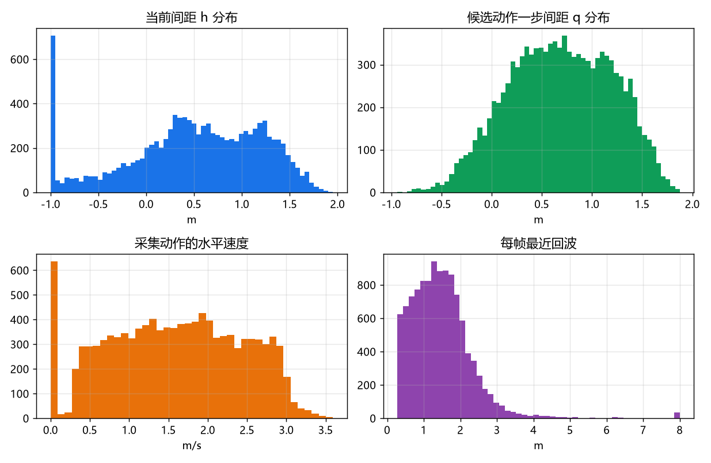
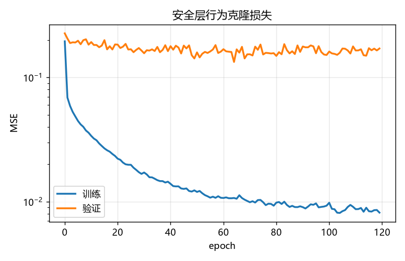
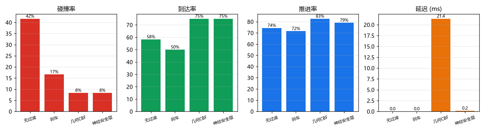
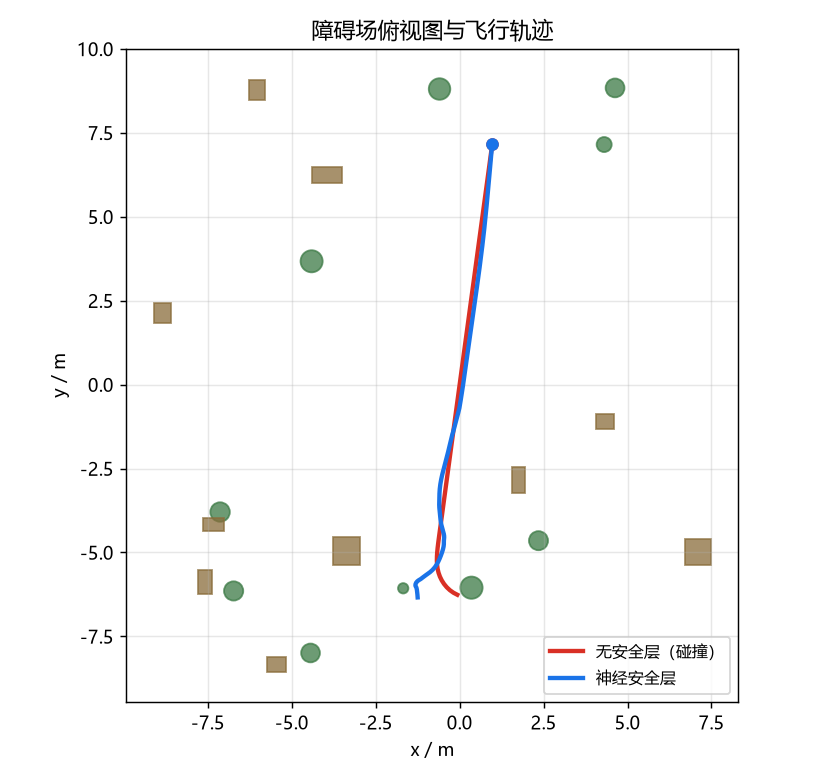
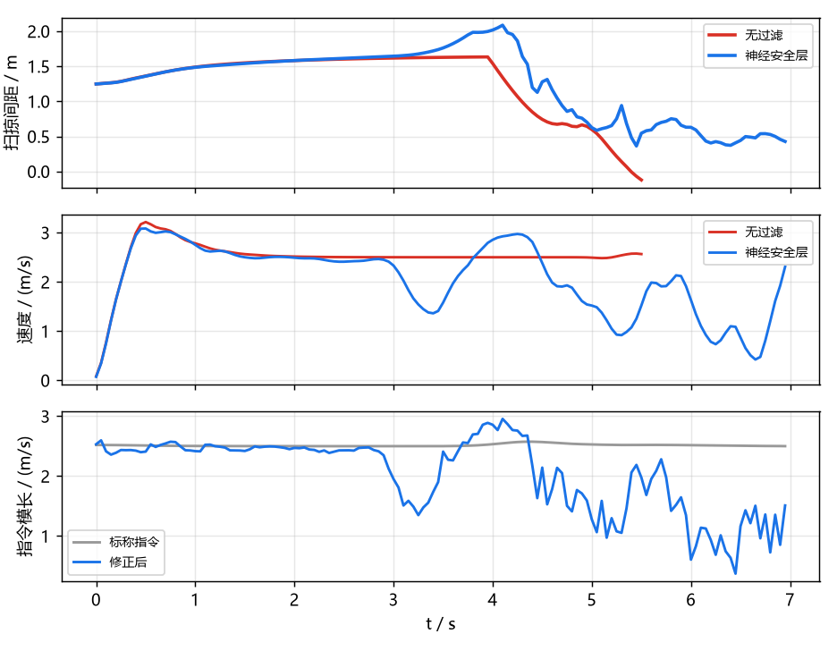
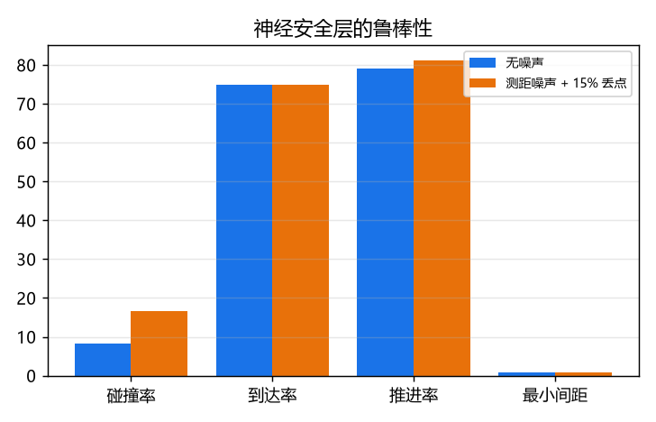

神经安全过滤器
对应作业任务（2）传感器感知与任务（3）导航控制。
输入 360° 激光距离栅格与当前速度，输出修正后的速度指令。几何 CBF 层计算 候选动作的 0.6 s 路径间距，神经网络用行为克隆学习该层；标称控制器不含避障。
1. 模块定位
课程内的无人机项目都是"一个控制器/策略直接输出指令"，没有独立的指令级 安全层：
| 已有模块 | 区别 |
|---|---|
uav_ppo_nav |
端到端 RL，策略本身承担避障，无独立安全约束 |
uav_depth_gate_racing_e2e |
端到端策略，碰撞率随训练波动 |
octree_uav_3d_pathfinding |
几何规划，默认位姿已知，不处理底层指令 |
2. 架构
/lidar/points ──→ 3×36 距离栅格 ─┐
/uav/odom ─────→ 机头系速度 ──────┼─→ 116 维观测 ──┬─→ 几何 CBF（教师）
/uav/goal ─────→ 目标方向 ────────┘ └─→ 神经安全层（部署）
/uav/cmd_vel_nominal ──→ 标称指令 ──────────────────────→ 修正指令
两个实现共用同一套观测与动作语义：
| 几何 CBF | 神经安全层 | |
|---|---|---|
| 间距来源 | 场景真值 SDF | 网络前向 |
| 决策 | 候选集 + 0.6 s rollout | 一次回归 |
| 延迟 | 19 ms | 0.14 ms |
| 用途 | 教师 / 上界 | 部署 |
3. 环境与数据
SafetyEnv：safety_field 场景，20 个盒/柱障碍，高度 1.2–2.8 m，范围 ±9 m。
障碍高度下限保证三层激光（−15°/0°/+15°）都能打到；底座自带的
obstacle_field 有 0.6 m 的低柱，在雷达锥之间是盲区。
动作是机头系速度，经一阶低通（tau=0.12 s）与航向跟随（2.5 rad/s）
变成参考轨迹，再由几何控制器跟踪。
| 项 | 值 |
|---|---|
| 控制频率 | 20 Hz |
| 雷达 | 36 方位 × 3 俯仰，8 m |
| 机体半径 | 0.16 m |
| 标称速度 | 2.5 m/s |
| 训练场景 | seed 0–15 |
| 测试场景 | seed 100–111 |
评价器数据（safety_dataset.npz）：10 个场景、每场景 12 集，随机动作
+ 标称扰动，11126 帧。标签 h 是沿当前速度的 0.6 s rollout 间距，q 是
给定动作后的 rollout 间距。
行为克隆数据（safety_imitation.npz）：几何层闭环飞行 16 个场景 × 4 集，
10057 帧，左右镜像后 20114 条。

4. 几何 CBF 层
对候选速度 ，按环境动力学外推 0.6 s：
航向按速度方向以 2.5 rad/s 跟随，每一步取到障碍表面与地面的最小距离， 是整段路径的最小值。约束
可行候选里取离标称指令最近的一个，代价里加 0.2 的目标方向项；无可行候选时 输出零指令。候选集为速度缩放 × 方位角偏转（0/±30°/±60°/±90°）× 高度偏置， 共 89 个。
rollout 必须与环境的低通和航向跟随一致。早期用直线扫掠代替，安全层会把 转弯后的路径当成安全，碰撞率反而上升到 38%；换成同动力学 rollout 后 降到 8%。
5. 神经安全层
输入 116 维观测 + 3 维标称指令，输出 3 维修正指令：
Linear(119,128) → ReLU → Linear(128,128) → ReLU → Linear(128,3)
32259 个参数，纯 numpy 前向，CPU 单帧 0.14 ms。
训练用行为克隆，按 episode 切验证集（12%），MSE，Adam（lr=2e-3， weight decay=1e-4），120 轮，保留验证最优。

训练集 MSE 0.009，验证 0.15：16 个场景的覆盖仍然有限，换场景类型需要重采。
6. 闭环评测
12 个未见场景（seed 100–111），每个场景一集，起点/终点对穿障碍场，初始 扫掠间距 >1.0 m。碰撞判据是机体中心到障碍表面 <0.16 m；到达判据是离目标 <0.8 m；推进率 。
7. 实测结果
| 过滤器 | 碰撞率 | 到达率 | 推进率 | 最小间距 | 延迟 |
|---|---|---|---|---|---|
| 无过滤 | 42% | 58% | 74% | 0.63 m | 0.01 ms |
| 刹车 | 17% | 50% | 72% | 0.62 m | 0.01 ms |
| 几何 CBF | 8% | 75% | 83% | 0.84 m | 19.0 ms |
| 神经安全层 | 8% | 75% | 79% | 0.77 m | 0.14 ms |
神经层与教师层的碰撞率、到达率相同，推进率低 4 个百分点，延迟低 136 倍。

单集时序（无过滤在 5.6 s 撞上障碍，神经层减速绕过）：


测距噪声 0.08 m + 15% 丢点：
| 条件 | 碰撞率 | 到达率 | 推进率 | 最小间距 |
|---|---|---|---|---|
| 无噪声 | 8% | 75% | 79% | 0.77 m |
| 噪声 + 丢点 | 17% | 75% | 81% | 0.53 m |

8. 源码解析
uav_neural_safety_filter/core/
├── geometry.py 盒/柱/球 SDF、批量点间距、rollout 间距
├── ranges.py 3×36 距离栅格、方向距离、激光下界
├── env.py SafetyEnv、safety_field、episode 生成
├── dataset.py 评价器数据、行为克隆数据、镜像增广
├── network.py SafetyNet（h/q）与 PolicyNet（指令）
├── training.py 两类训练、按 episode 切验证集
├── filter.py 候选集、几何层、神经层、评价器层
└── experiment.py 闭环评测与汇总
8.1 geometry.py：rollout 间距
rollout_clearance_many 按环境的低通与航向跟随逐点外推，每步调用
clearance_points（向量化 SDF）。这是教师层与数据标签的共同来源。
用直线扫掠代替时，转弯后的路径被高估，闭环碰撞 38%。
8.2 ranges.py：零指令的方向约束
direction_range 对水平速度小于 0.2 m/s 的指令返回 (1,1)，不施加方向
约束。早期对所有指令都取全局最近回波，刹停候选被误判为不安全，安全层
转而加速，碰撞率 75%。
8.3 env.py：场景与起点
safety_field 的障碍高度下限 1.2 m，保证三层雷达都能打到。起点/终点
生成时检查初始扫掠间距 >1.0 m，避免"一出生就注定碰撞"的评测样本。
8.4 filter.py：候选集与退路
候选集覆盖速度缩放、方位偏转与高度偏置，共 89 个。可行集为空时输出零 指令，而不是"离标称最近"——后者在近距状态会把无人机继续推向障碍。
8.5 评价器路线（对照）
SafetyNet 同时预测当前间距 h 与候选动作间距 q，在候选集上求
q >= 0.8 m。训练集 MAE 0.09 m，但闭环碰撞 25–75%：短视界约束对
0.1 m 级预测误差非常敏感。这条路线保留在代码里，作为"为什么不直接用
学习式评价器"的对照。
9. 复现步骤
# 仿真侧（Python ≥3.10）
python main.py --collect --out data/safety_dataset.npz
python main.py --train --data data/safety_dataset.npz --out data/safety_net.npz
python main.py --collect-imitation --out data/safety_imitation.npz
python main.py --train-policy --data data/safety_imitation.npz \
--out data/safety_policy.npz --epochs 120
# 任意机器（只需 numpy）
python main.py --selftest
python main.py --evaluate --model data/safety_policy.npz \
--episodes 12 --max-time 20 --eval-seed 100 --out results.json
python main.py --figures --model data/safety_policy.npz --results results.json \
--outdir ../docs/img/air/uav_neural_safety_filter
ROS2 在线运行见包内 README.md。
10. 依赖
- MuJoCo 四旋翼仿真与 ROS2 桥接底座
（提供
/lidar/points、/uav/odom与/uav/cmd_vel）